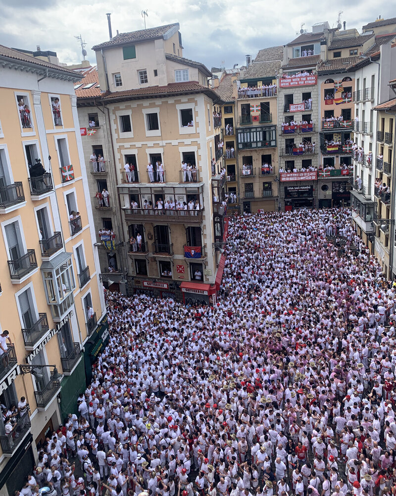

Qué hacer en San Fermín
Una guía completa con todos los planes, momentos y experiencias para vivir San Fermín de verdad.
Leer másEl Chupinazo marca el inicio oficial de San Fermín. A las 12:00 del 6 de julio, miles de personas llenan la Plaza del Ayuntamiento de Pamplona para lanzar el cohete que da comienzo a ocho días de fiesta ininterrumpida.
La plaza alcanza una densidad muy alta de gente horas antes del lanzamiento. El ambiente es intenso, festivo y caótico: apenas hay visibilidad del balcón del Ayuntamiento y moverse resulta prácticamente imposible.
El momento del chupinazo dura segundos, la experiencia completa, dos horas de multitud y agobio. La diferencia está en si puedes verlo, entenderlo y vivirlo con espacio. Puedes ampliar cómo cambia la experiencia en esta guía sobre cómo vivir el chupinazo de San Fermín.
Hay distintas formas de estar presente en este momento:
Elegir una u otra opción no cambia solo la comodidad, cambia completamente lo que ves y lo que entiendes del momento.
La diferencia no está en estar, sino en cómo se vive.
Y si buscas algo más completo, puedes plantear una experiencia personalizada que conecte este momento con el resto del día.
Cada experiencia parte de una misma base: vivir el inicio de la fiesta con perspectiva. A partir de ahí, cambia el cómo.
Todas las opciones incluyen acceso organizado y acompañamiento previo para que no tengas que preocuparte por la logística del día.
Las opciones varían según la ubicación y el acceso. De forma orientativa, suelen situarse entre 500€ y 1200€ por persona.
El precio depende principalmente de la ubicación exacta, el número de personas, el tipo de almuerzo y el nivel de privacidad del espacio.
A partir de ahí, cada propuesta se adapta en función de lo que buscas.
Más allá del momento, se trata de cómo empieza todo. Desde un balcón, el Chupinazo deja de ser un instante confuso para convertirse en un inicio claro, vivido con perspectiva. Frente a otros momentos más pausados como la Procesión de San Fermín, el chupinazo es pura intensidad.
Es una forma de empezar San Fermín entendiendo lo que ocurre desde el primer minuto.
Esto no nace como un servicio. Nace de haber vivido San Fermín desde dentro durante años.
Nuestro papel es simplemente compartir esa forma de vivirlo, desde lo que somos y cómo trabajamos, que puedes ver en nuestro equipo.
No organizamos eventos masivos. Acompañamos a personas y pequeños grupos que quieren vivir San Fermín de otra manera, con acceso privilegiado y sin fricciones.
Cuéntanos cómo te gustaría vivirlo y te proponemos opciones a medida, sin compromiso.

No tiene nada que ver con estar abajo. Mucho mejor.
El Chupinazo es solo el comienzo. A partir de ahí, la ciudad cambia de ritmo y de intensidad.
Puedes continuar con el encierro, explorar una experiencia a medida o descubrir la Procesión.
Porque todo empieza aquí, pero no termina aquí.
Una guía completa con todos los planes, momentos y experiencias para vivir San Fermín de verdad.
Leer más
Todo lo que necesitas saber para disfrutar el inicio de San Fermín.
Leer másAlgunas experiencias no terminan cuando acaba el evento. Para grupos, empresas o momentos especiales, podemos acompañarlo con piezas diseñadas específicamente para la ocasión.
Desde elementos sencillos hasta detalles más cuidados, todo se plantea como una extensión natural de la experiencia.
Porque a veces lo que se lleva puesto también forma parte de lo vivido.